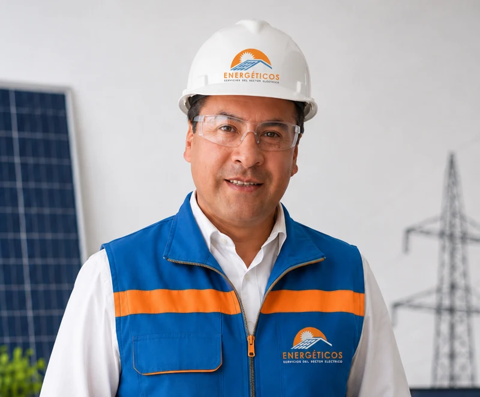

FORMACIÓN PROFESIONAL · PERÚCURSO DE PAGO · MATRÍCULA INDIVIDUALDecisiones que
Decisiones que
ponen en marcha
la electromovilidad.
Gestión de Flotas Eléctricas y Operaciones de Electromovilidad – Perú.
Aprende a seleccionar vehículos, interpretar su autonomía y tomar decisiones técnicas para la operación de una flota.
Acceso al aula para estudiantes con matrícula activa y pago confirmado.
TU DOCENTE
Ing. Rafael Zeña
Ingeniero Mecánico Electricista
Reg. CIP 85540
Módulo 1 · Adquisición y selección
de vehículos eléctricos
7 horas académicas · Cinco unidades · Caso simulado en Áncash
Tecnologías de vehículos electrificados
Arquitectura, batería y ficha técnica
Autonomía y compatibilidad operacional
Metodología profesional de selección
Caso aplicado y autoevaluación
El programa se actualizará módulo por módulo. Las lecciones y los materiales descargables están reservados a los estudiantes matriculados.
TU ESPACIO DE APRENDIZAJE
Ingresa a tu aula.
Utiliza el correo con el que te matriculaste y tu contraseña personal.
¿Aún no estás matriculado? Consulta al docente →
Tu contraseña es personal. El docente no necesita conocerla.
Evalúa lo aprendido en cada capítulo.
Autoevaluación con explicaciones en cada una de las cinco unidades
Evaluación de cierre de cada capítulo con resultado por estudiante
Evaluación final integradora del Módulo 1
El Módulo 1 incorpora 50 preguntas: 15 de práctica, 25 de cierre de unidades y 10 de integración final. El registro de notas se habilitará al completar la configuración del aula privada.
José Rafael Zeña Peche
Ingeniero Mecánico Electricista · Reg. CIP 85540
jose.zena.p@uni.pe ↗